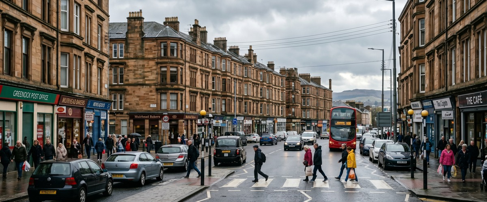
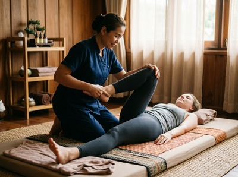
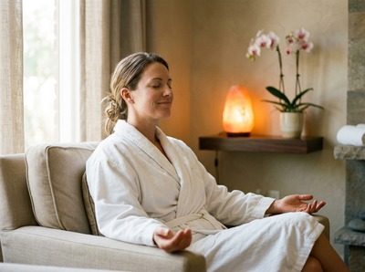

Wellpark is a residential neighbourhood in central Greenock, sitting close to the town centre and named after the historic park that has served the local community for generations.

Thai massage in Wellpark Greenock is within easy reach for residents here, whether you live in one of the traditional tenement flats near Wellpark Court or in the surrounding streets of Inverclyde Central. The area is home to a broad mix of working people, families, and long-term Greenock residents who need practical, effective care rather than a distant city-centre trip.
Thai Massage Greenock is ideally placed to serve the Wellpark area. The studio is located on South Street in central Greenock, just a short distance from the Wellpark neighbourhood, making it one of the most convenient options for local residents looking for a trusted massage therapist nearby. Whether you are dealing with the physical strain of a physical job, the tension that builds from a long working week, or simply the need for proper rest, Thai Massage Greenock offers a range of treatments tailored to what your body actually needs.

Jariya Malone, the therapist behind Thai Massage Greenock, trained at Bangkok's renowned Wat Po temple, the birthplace of traditional Thai massage. Every session is personalised, with detailed notes kept from visit to visit so treatments build on what has come before. That level of care is rare, and it is what keeps clients from across Inverclyde coming back. You can book your session online and get started at a time that suits you.
Thai Massage Greenock offers a full menu of authentic Thai treatments, each addressing different needs. Whether you are looking for deep therapeutic work, gentle relaxation, or targeted recovery, there is a treatment suited to you.
From the Wellpark area, the studio on South Street is a straightforward journey. The Well Park bus stop is served by McGill's services including the 543 route, which connects the area to Greenock town centre in just a few minutes. From the town centre, South Street is a short walk away.
If you prefer to walk, the route from Wellpark to South Street takes around 10 to 15 minutes on foot through central Greenock. Parking is also available nearby for those travelling by car. The convenience of the location means a session fits easily into a lunch break or an evening after work, without the need for a long commute.
Clients from the Wellpark area come to Thai Massage Greenock for the same reason clients come from across Inverclyde: because Jariya's Wat Po training produces results that go beyond what a standard spa treatment offers. Thai massage addresses muscle tension, back pain, neck pain, and the effects of chronic stress at a deeper level, working on the whole body rather than just the presenting problem.

For residents dealing with poor posture from desk work, physical fatigue from manual trades, or stress that disrupts sleep, a regular session at Thai Massage Greenock offers genuine relief. You can book an appointment online and choose a time that works around your schedule.
Wellpark takes its name from the park at the heart of the neighbourhood, a green space set on a hill with a historic well still visible in its north-east corner, protected by railings. The park is well maintained and includes a war memorial at its centre, making it a quiet local landmark that has served the community for well over a century. The name Wellpark also has wider Scottish connections: Wellpark on Wikipedia notes a historic football club of the same name that was active in Glasgow in the 1870s, a reminder of how deeply rooted the name is in Scottish community life.
Thai Massage Greenock is located on South Street in central Greenock, which is approximately a 10 to 15 minute walk from the Wellpark area. If you prefer to take the bus, McGill's services from the Well Park stop connect to the town centre in just a few minutes, making the studio one of the most accessible massage therapists in Inverclyde for Wellpark residents.
The Well Park bus stop is served by McGill's routes including the 543 service, which runs into Greenock town centre. From there, South Street and the Thai Massage Greenock studio are a short walk. Journey times from Wellpark to the town centre are typically just a few minutes by bus.
Same-day availability depends on the current schedule, so it is always worth checking. The easiest way to find an available slot is to use the online booking form, which shows real-time availability. If you need to speak to someone directly, you can also call the studio on 01475 600868.
For residents dealing with the everyday physical demands of working life in Inverclyde, Traditional Thai Massage is often the best starting point. It works across the whole body using acupressure and assisted stretching to release muscle tension, improve range of motion, and address the kind of postural strain that builds up from physical or desk-based work. If you have a specific area of concern such as back pain or neck pain, Jariya will tailor the session accordingly.
Thai Massage Greenock offers appointments across a range of times to suit working schedules, including evening slots. The best way to check current availability is to visit the booking page or call 01475 600868 to discuss a time that works for you.